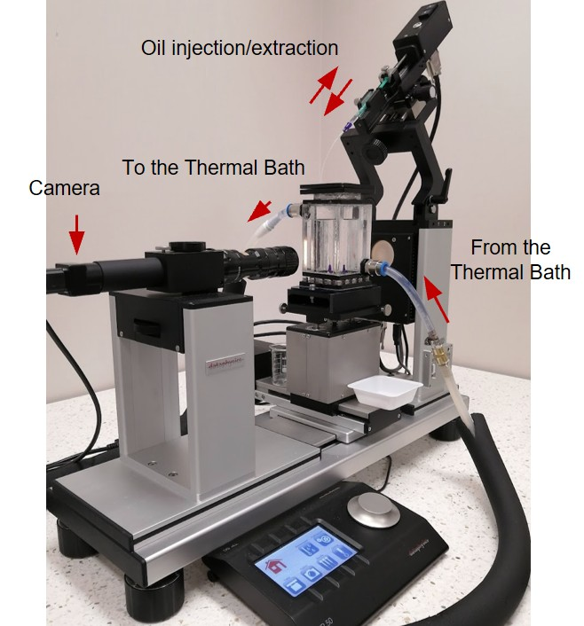

Inverted Pendant-Drop Interfacial Tensiometry
I designed and manufactured a temperature-controlled acrylic cell for measuring lubricant-water interfacial tension using an optical goniometer. Conventional pendant-drop configurations are unsuitable because lubricating oils are generally less dense than water: an immersed oil droplet rises rather than hanging beneath a downward-facing needle. The cell therefore uses an inverted injection arrangement that stabilises the buoyant droplet beneath an upward-facing needle for Young-Laplace profile analysis.
The apparatus was designed around the goniometer’s stage, imaging axis, and working distance, featuring optically accessible acrylic walls for backlit droplet imaging. Temperature control provides reproducible thermal conditions and allows the phase-density difference used in the profile analysis to be evaluated accurately at the measurement temperature.
The system supports static and time-resolved measurements of interfacial tension for lubricants such as silicone oils and hydrocarbons in water. These measurements provide essential input for interpreting lubricant retention and depletion, interfacial deformation, gas enrichment, and the hydrodynamic behaviour of lubricant-infused surfaces.
Why an Inverted Cell?
A lubricant droplet is usually less dense than water and therefore rises. A conventional downward pendant-drop configuration cannot maintain the required droplet orientation. The inverted apparatus uses buoyancy to form a stable, analysable droplet beneath an upward-facing needle.
Measurement Principle
The droplet contour is recorded optically and fitted using the Young-Laplace equation. The fitted shape reflects the competition between interfacial tension, which tends to minimise surface area, and buoyancy, which deforms the droplet away from a spherical shape. Pendant-drop methods can measure liquid-liquid interfacial tension provided the drop orientation is selected according to the density difference between the two phases.
Key Design Features
- Machined or fabricated acrylic measurement cell
- Direct mounting on the goniometer stage
- Inverted, upward-facing droplet injection
- Clear optical path for silhouette imaging
- Temperature-controlled surrounding water phase
- Replaceable needle or capillary interface
- Sufficient wall clearance to limit confinement effects
- Access for filling, cleaning, and removing trapped air
- Compatibility with time-resolved interfacial-tension measurements
Apparatus & Design Sequence
CAD Design & Optical Alignment
The CAD geometry integrates the custom fluid enclosure with the optical axis of the goniometer. Wall thicknesses and chamber dimensions were selected to optimize optical clarity, avoid refractive distortion during backlit droplet silhouette capture, and maintain uniform temperature distribution.

Complete Apparatus & Experimental Validation
The manufactured cell mounted directly onto the goniometer stage. High-precision positioning allows fine adjustment of the inverted needle relative to the camera lens, while the integrated thermal regulation maintains constant phase-density differences essential for high-fidelity Young-Laplace profile fitting.

Open Source CAD & Hardware Repositories
Selected mechanical designs, SolidWorks assemblies, and experimental hardware configurations are accessible on GitHub for academic research and collaboration.